Es un sistema de gestión de contenidos (CSM) que permite crear y mantener un blog u otro tipo de web. Es un sistema ideal para un sitio web que se actualiza periodicamente. Si se escribe contenido con cierta frecuencia, cuando alguien accede al sitio web, puede encontrar todos esos contenidos ordenados cronologicamente.
Entraremos en modo MySQL mediante el comando mysql -u root -p y ahora introduciremos el comando CREATE DATABASE wordpress. Después comprobaremos que se haya creado correctamente con el comando SHOW DATABASES.
Ahora crearemos un usuario para la base de datos con el comando CREATE USER adminwordpress@localhost IDENTIFIED BY ‘admin’.
Ahora le daremos privilegios al usuario creado anteriormente en la base de datos con el comando GRANT ALL PRIVILEGES ON wordpress.* TO adminwordpress@localhost;
Ahora descargaremos el paquete de Wordpress en castellano mediante el comando wget https://es.wordpress.org/wordpress-4.8.2-es_ES.tar.gz.
Ahora introducimos el comando tar xzvf wordpress-4.8.2-es_ES.tar.gz y esperamos a que acabe.
Ahora actualizaremos los repositorios con el comando sudo apt-get update y despues descargaremos los paquetes con los comando apt-get install php7.0-gd y sudo apt-get install libssh2–1-dev libssh2–1.
Un archivo de configuración de ejemplo , que se acerca mucho al que necesitamos, está incluido por defecto. Aunque, necesitamos copiarlo a la localización del archivo de configuración por defecto para que WordPress reconozca al archivo. Lo haremos así: cp wp-config-sample.php wp-config.php.
Ahora que tenemos un archivo de configuración con el que trabajar, lo abriremos con un editor de texto con el comando nano wp-config-php.
Ahora entraremos en el directorio donde hayamos instalado Wordpress, en nuestro caso escribiremos cd ~/wordpress.
Ahora entraremos en la IP de nuestro server.
Rellenamos los campos que nos pide:
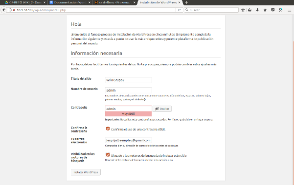Ahora accedemos:
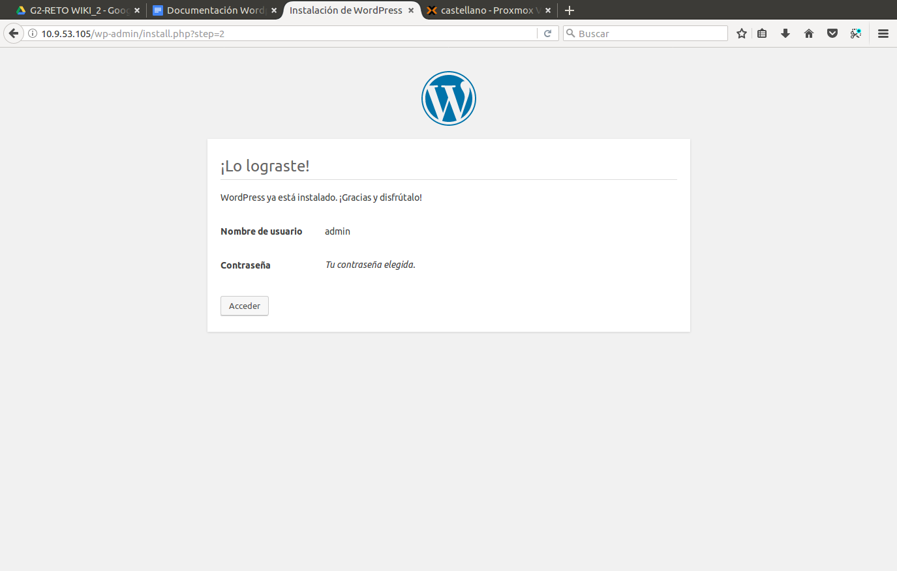Ahora nos logueamos con el usuario y contraseña que hayamos puesto.
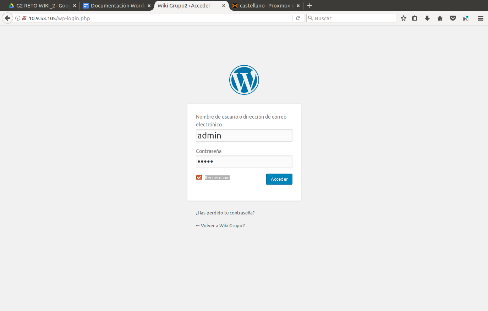Vamos a enseñaros a hacer algunas cosas basicas en wordpress. Para empezar a editar nuestro sitio pinchamos en personalizar tu sitio.
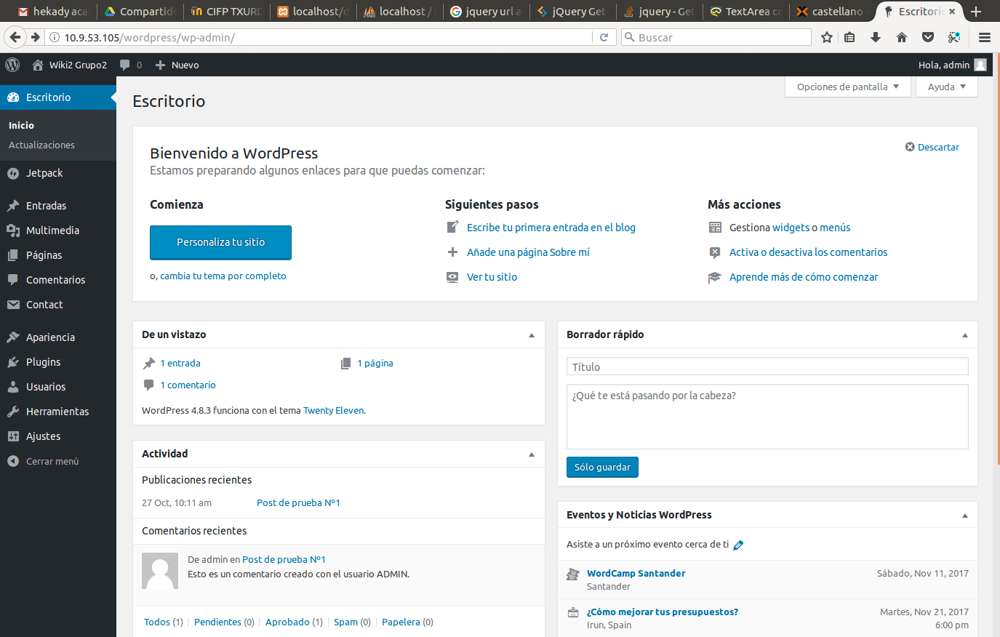Para cambiar el tema ir a tema activo y hacer click en cambiar.
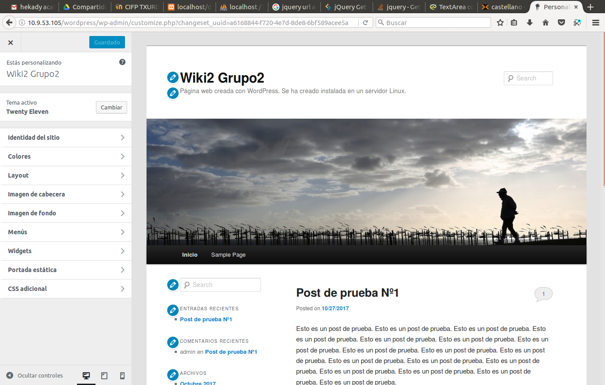Una vez hayamos elegido un tema le damo a guardar y activar.
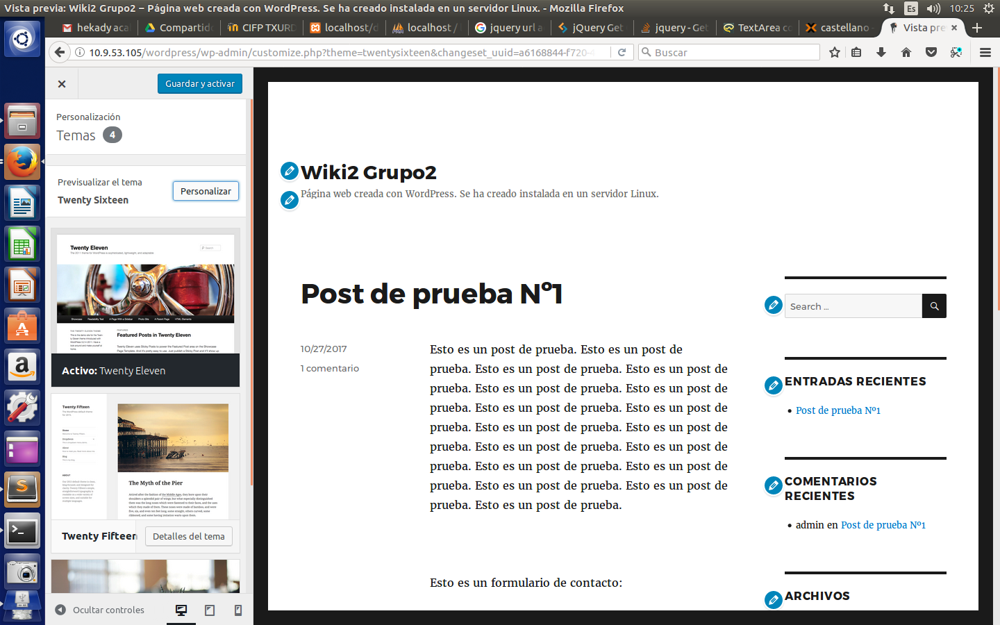Para añadir una nueva entrada a la izquierda pinchamos en entradas y nueva entrada nos saldra algo como esto.
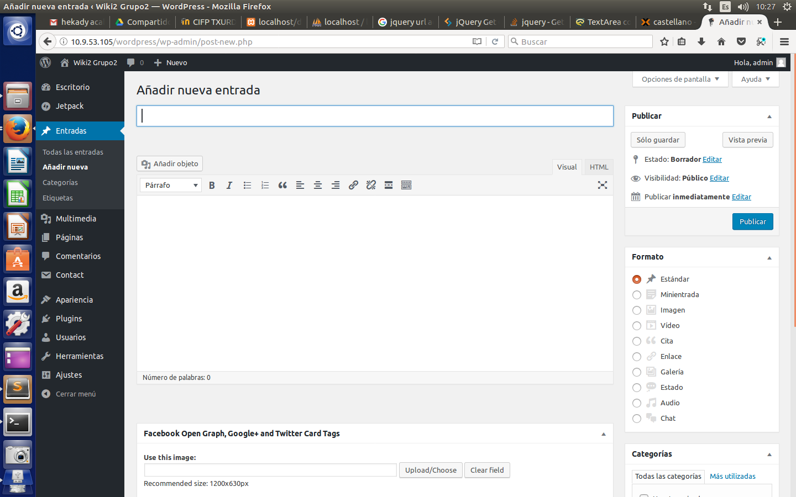Una vez hayamos creado la entrada y guardarla la podremos visualizar en nuestro sitio.
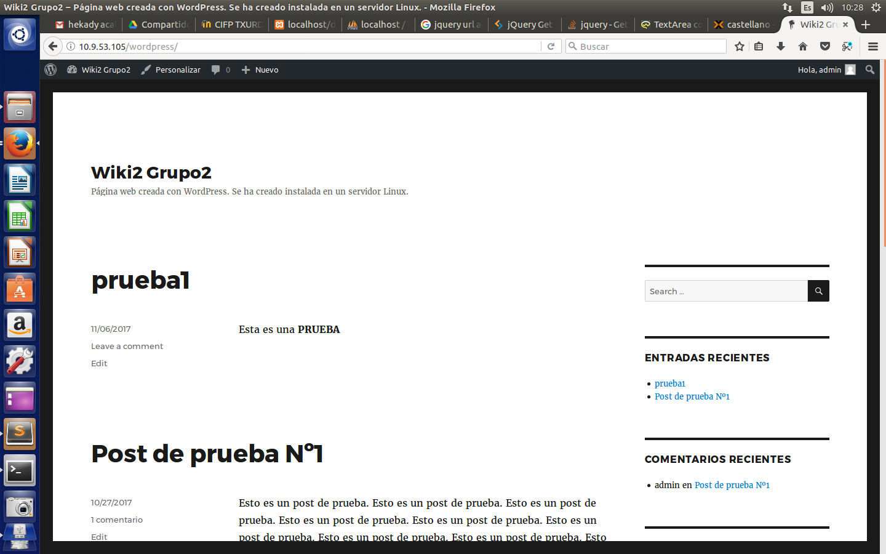Una cosa que es muy util a la hora de usar wordpress son los plugins que podemos instalar accediendo por el panel de la izquierda y haciendo click en añadir plugin, hay elegimos un plugin que nos parezca correcto para instalar.
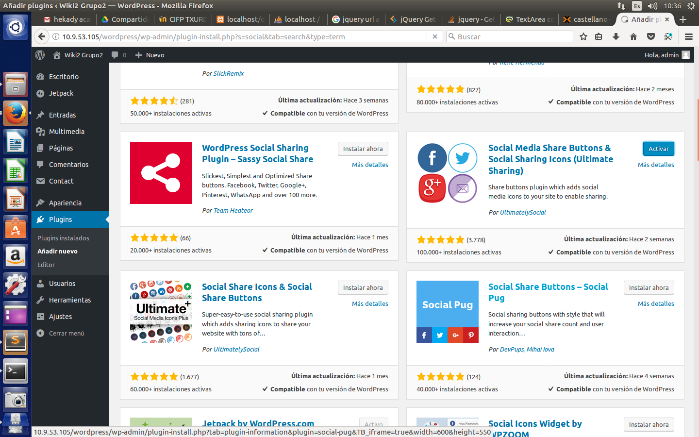Una vez instalado lo podemos configurar.
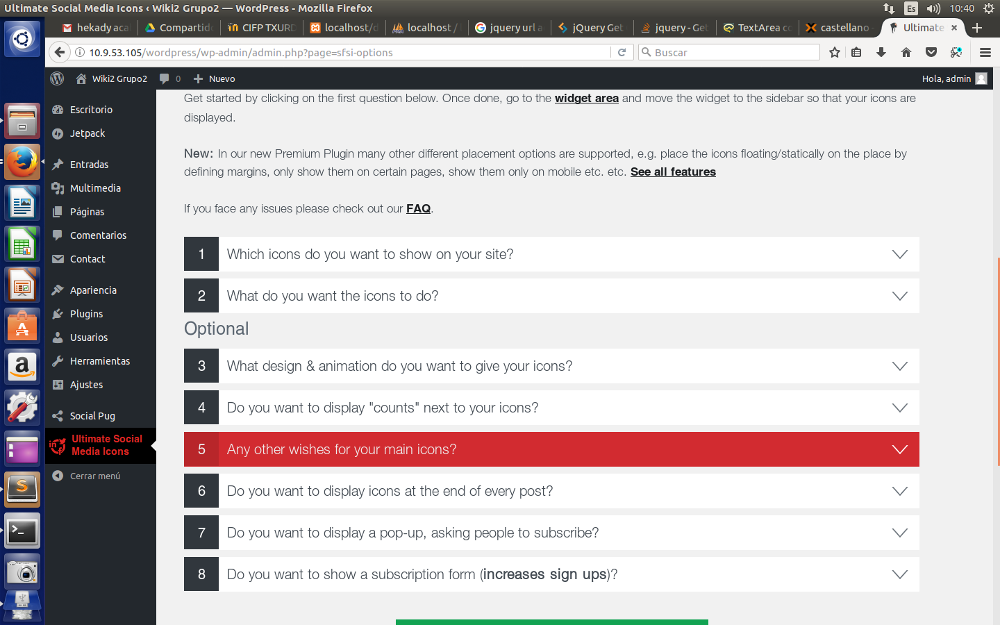El plugin que yo instale para añadirlo a la pagina lo puedo hacer desde apariencia, solo tendriamos que cojerlo y arrastrarlo al side bar.
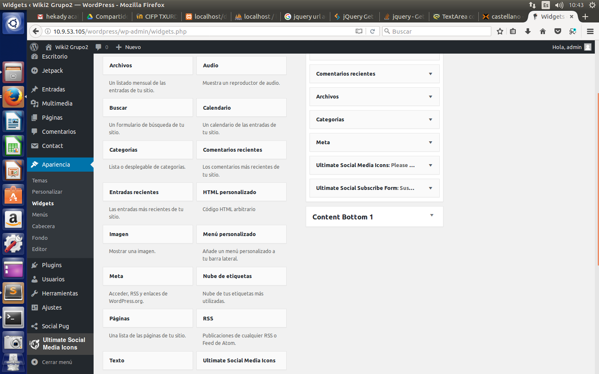Aqui podemos ver como se a puesto el plugin en nuestra pagina.
El único problema que tuvimos nosotros fue que no nos dejaba instalar ningún tipo de componente adicional al WordPress, por lo que tuvimos que insertar en el wp-config.php la siguiente linea de código: define('FS_METHOD', 'direct');